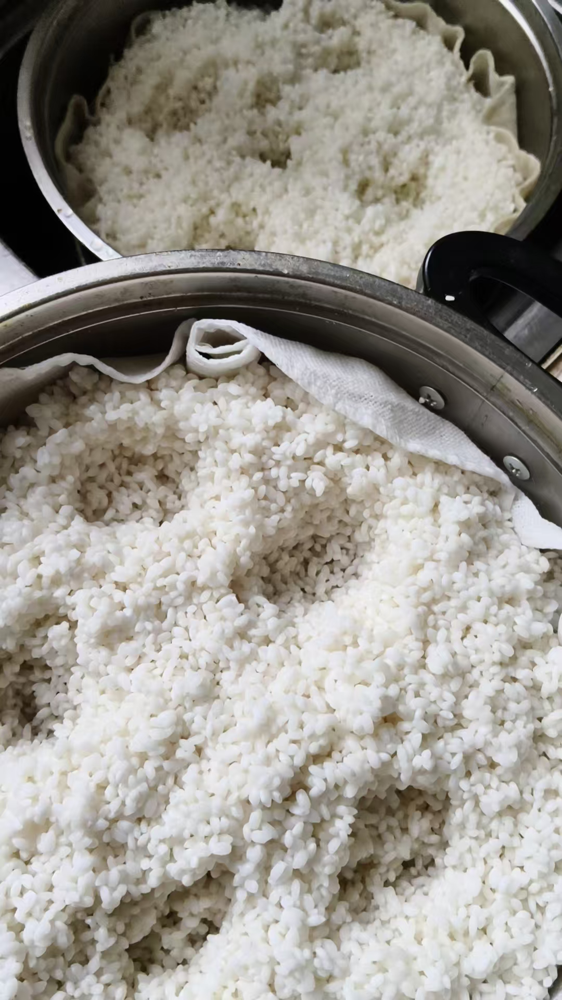
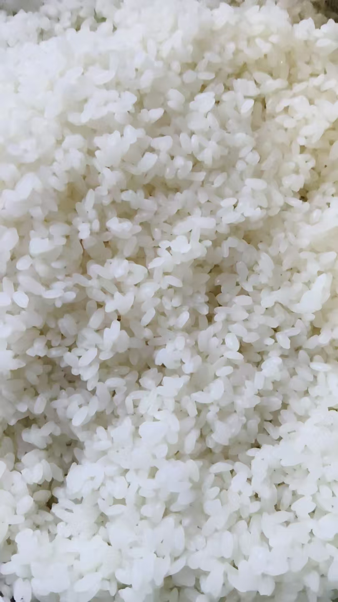
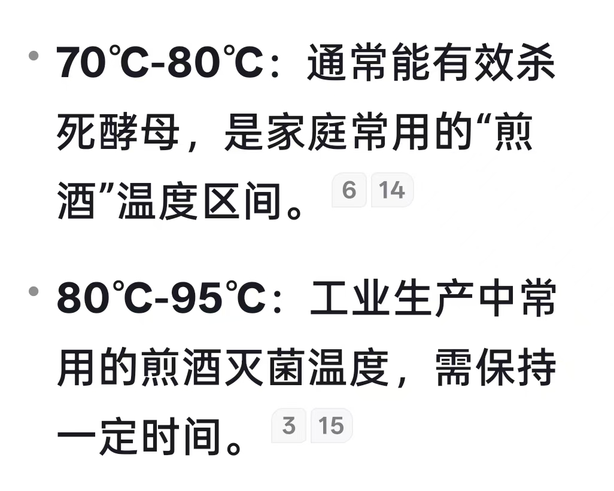
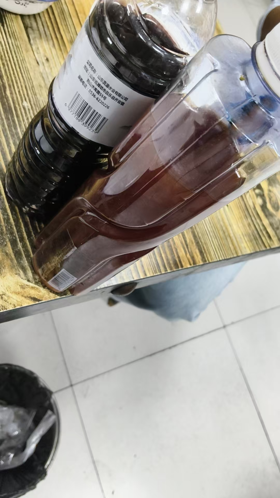

20260924米酒
风水布局 原始对话记录功能继续提升，堕胎婴灵，不管成形没有成形，男女早定
这样，根据男女送衣服，及各种用具
万无一失
黑龙江有个老头，八十多岁，就不用说，知道堕胎几个，几男几女
这个很服人
因为男女，不成形可能分不出来
但是几个，一般都记得很清楚

只有三个桶
连做三天米酒，存起来
刚才搜了个太岁
说以前抓过
罚款二十万
说是三无产品
太搞笑了
太岁还有厂家生产吗
[呲牙][呲牙][呲牙]
@紫鸢真人 师父，做米酒怎么才能让酒水多，我看下网上是需要二发吗？我的醪糟，虽然甜，感觉酒水少了点，加水再煮感觉没有外面买的甜。

网上教的，细节不说
米洗净泡六小时
蒸十五分钟
凉水冲凉
把米放进发酵桶
拌上曲
一斤干米加半斤矿泉水
米吸水，不加水，不等发酵就干了
一斤干米加半斤水，再搅拌均匀，就半干不湿了
用压板压实，
酒瓶子把中间压一个看酒的窝
大约一天半，窝里酒满
甘甜
再一斤米加一斤矿泉水
米糖化，浮上来
略微有酒味，蒸八十度灭菌
装进瓶子，约存放越好喝
蒸100度，
八十度灭菌[呲牙][呲牙][呲牙]，二十分钟
一百度，蒸开了，好像跑了味道
蒸100度把酒曲味去
可以多放
[憨笑][憨笑][憨笑][憨笑]

@谢芳玲
还真不能一百度
我是真酿酒师，正儿八经培训过
[憨笑][憨笑][憨笑]
品鉴师资格
[呲牙][呲牙]
还是品酒师
正儿八经的资格证书
那不是在群里发过
米要掌握火候，蒸太烂了，反倒不好
我直接煮的，没有蒸，估计太烂了
煮不行
必须严格要求
半熟米还能化成泥
煮的化成浆了，取不出酒来

桑椹酒
这颜色淡的，疏通能力特别强
[呲牙][呲牙]前几天听课的那个，就给了一本药酒书，一盒熊胆粉，再没下文
属于送完了就跑的那种
听课也不用听，就放在一边，播四十分钟
今晚是赚了两万国奖的研究生请吃饭
[呲牙][呲牙]
全校惊讶
导师都摸不着头脑了
再也想不到这学生能得国奖
180分
二百多三百多的就不敢报
充分验证了神通的准确性
不过我没有改
只是看亮不亮
米酒二次发酵与灭菌：一份实操问答
一、本页是什么
本页是群里一段围绕米酒的问答，起因是有人问："做米酒怎么才能让酒水多，需要二发吗？我的醪糟虽然甜，感觉酒水少了点。"于是老师给出了一套完整步骤，另一位学友则亮明"我是真酿酒师、正儿八经培训过"，补充了几条要点。一问两答，实操性很强。
二、一份可照抄的步骤清单
把问答里的做法按顺序整理如下：
- 洗米泡米：米洗净，泡六小时；
- 蒸：蒸十五分钟；
- 冲凉：用凉水冲凉；
- 入桶拌曲：米放进发酵桶，拌上曲；
- 第一次加水：一斤干米加半斤矿泉水，搅匀，半干不湿；
- 压实挖窝：用压板压实，酒瓶在中间压一个"看酒的窝"；
- 等出酒：约一天半，窝里酒满，甘甜；
- 第二次加水：再按一斤米加一斤矿泉水，让米糖化、浮上来；
- 灭菌装瓶：略有酒味时，八十度灭菌二十分钟，装瓶存放。
三、关键点：米要蒸、水要分两次加
问答里两个"坑"被反复强调，值得单列：
| 要点 | 正确做法 | 反例 |
|---|---|---|
| 米怎么熟 | 必须蒸 | 直接"煮"，化成浆，取不出酒 |
| 米要什么状态 | 半熟、能化成泥 | 蒸太烂，反倒不好 |
| 水怎么加 | 分两次：先半斤，出酒后一斤 | 一次加完，米吸水不够会发干 |
一句话总结："米要掌握火候，蒸太烂了，反倒不好。"
四、灭菌：八十度，二十分钟
本页对灭菌交代很清楚：八十度、二十分钟。还特意对比"一百度"——有人试过蒸到一百度，"蒸开了，好像跑了味道"，所以不主张一百度。灭菌是为了停发酵、去曲味、便于久存，原文说"装进瓶子，约存放越好喝"。
五、常见问题
问：二发到底要不要加水？ 要。本页的做法是出酒后再按一斤米加一斤水，让米继续糖化上浮，这样"酒水"才多。
问：为什么我的酒水少？ 常见原因就是水加得不够或米煮得太烂，原问答正是围绕这两点。
问：米酒越放越好喝吗？ 原文说"约存放越好喝"，属经验之谈；注意卫生与密封，含酒精，适量饮用。
六、提醒
- 本页是家庭酿制记录，卫生、温度、火候都要严控；
- 自酿涉酒，遵守当地规定，不用于对外销售；
- 含酒精饮品，孕妇、儿童、服药者请谨慎。